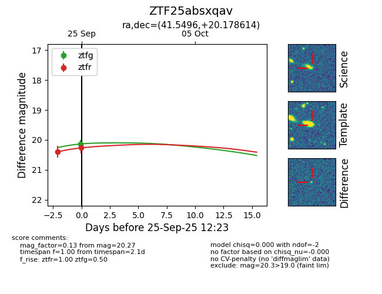
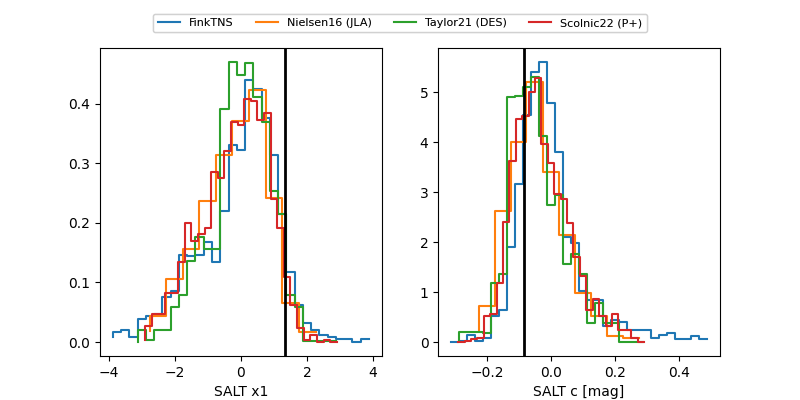

FINK: ZTF25absxqav
Lasair: ZTF25absxqav
ALeRCE: ZTF25absxqav
ZTF25absxqav (ztf,fink)
equatorial (ra, dec) = (41.5496,+20.17861)
galactic (l, b) = (156.3678,-35.13560)


last ztfg=20.13, ztfr=20.27
1 ztfg, 2 ztfr detections